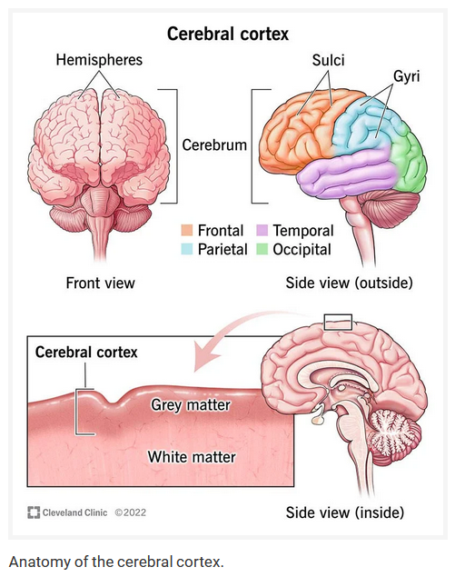
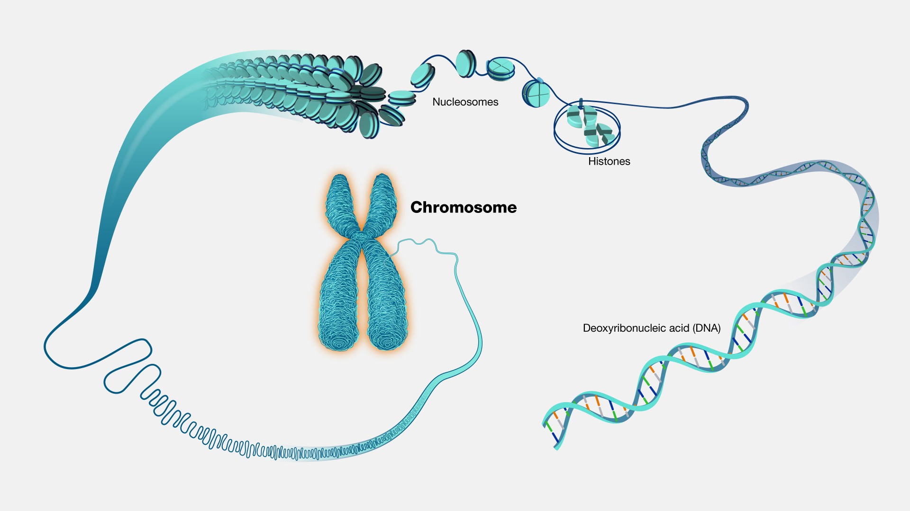

1) Brain
2) Genetics
Index for Human Brain:
Chapter 0: Interesting Links
Chapter 1: Introduction to the Human Brain
Chapter 2: Neuroanatomy
Chapter 4: Cognitive Neuroscience Methods I
Interesting Links
- The Human Brain MIT Playlist
- TED talk: by Nancy Kanwisher. A neural portrait of the human mind.
- How is a fMRI performed.
- Nancy Brain Talks at MIT
- TED talk: by Nancy Kanwisher. A neural portrait of the human mind.
- How is a fMRI performed.
- Nancy Brain Talks at MIT
Chapter 1: Introduction to the Human Brain
- Lecture 1
Why study about the human brain?
- Brain vs Mind. Brain refers to the physical thing that you can touch. Mind refers to the abstract thing that the brain "contains".
- By understanding how the brain works, can we answer questions like: are there things that we might not be able to think? Possible true scientific theories that we might not be able to understand, ever?
- Can the change in the structure of the brain change the structure of thought?
- Advance AI. For instance, visual object recognition was considered a very difficult problem, until this paper was published: ImageNet Classification with Deep Convolutional Neural Networks in 2012. By creating AI that can mimic human behavior, we can get a closer insight into how our own brains work, which in turn helps the development of even better AI and turns into a nice feedback loop. Both humans and deep nets are pretty good at pattern recognition. What humans are good at, but machines are not, is building models to understand our world. Well not all humans, I guess.
- And because "it is the greatest intellectual quest of all time". Besides, "reverse-engineer the human brain" sounds metal af.

- What (if any) is special about the human brain? How do we get to think about these things, and other species don't?
- Where does knowledge come from? We know all this "stuff". How much of this stuff was wired into our brains (as a result of genetics), and how much of it did we get from experience?
- Can we change the structure of the brain just by learning?
- Can we think without language?
- How much of our mind is subconscious? What goes on in the background when we are not paying attention?
- No one has a freaking clue about how we can get a bunch of neurons to understand the meaning of a particular sentence currently.
- By understanding how the brain works, can we answer questions like: are there things that we might not be able to think? Possible true scientific theories that we might not be able to understand, ever?
- Can the change in the structure of the brain change the structure of thought?
- Advance AI. For instance, visual object recognition was considered a very difficult problem, until this paper was published: ImageNet Classification with Deep Convolutional Neural Networks in 2012. By creating AI that can mimic human behavior, we can get a closer insight into how our own brains work, which in turn helps the development of even better AI and turns into a nice feedback loop. Both humans and deep nets are pretty good at pattern recognition. What humans are good at, but machines are not, is building models to understand our world. Well not all humans, I guess.
- And because "it is the greatest intellectual quest of all time". Besides, "reverse-engineer the human brain" sounds metal af.
We want to answer questions like:
- What (if any) is special about the human brain? How do we get to think about these things, and other species don't?
- Where does knowledge come from? We know all this "stuff". How much of this stuff was wired into our brains (as a result of genetics), and how much of it did we get from experience?
- Can we change the structure of the brain just by learning?
- Can we think without language?
- How much of our mind is subconscious? What goes on in the background when we are not paying attention?
- No one has a freaking clue about how we can get a bunch of neurons to understand the meaning of a particular sentence currently.
Themes of this course
- The brain is not an amorphous mush. It has organization and structure, where the different bits do different things.
- Some parts of the brain do very specific things. Why do these things only get their dedicated parts, why don't others? Is it because the things that this part does are very frequent, or is it that they are too involved?
- The organization of the brain mirrors the architecture of the mind. So the idea is that if we can explain the fundamental pieces of the brain, then that should help us explain the fundamental pieces of the mind.
- How do brains change? Specifically, how do they change as we age? How do they change as we learn and experience new things? And how do they change if the brain suffers an injury?
- So how will we go about studying the brain? We start by asking the question: "How does the brain give rise to the mind?". To answer this question we need to understand what the mind is capable of. The mind can perform various functions like: perception, vision, cognition, hearing, language. For each of these functions, we want to find out how this particular function is implemented in the brain. We will focus on the brain functions whose brain basis are best understood - in other words, concentrate on functions about which we know the exact parts of the brain that are handling them. For example, about a third of the brain handles vision. So understanding vision will help us understand how a major part of the brain works.
- For each of these functions we will ask the following questions:
a) To what extent is this process implemented in its own specialized brain hardware?
b) Do multiple brain regions contribute to this process?
c) If yes, then is there a division of labor between these regions?
d) How does this region/system develop?
e) Does this region have homologues in other species, or is it uniquely human?
- Note that memory is not being covered in this lecture. Refer 9.00 and 9.01 to understand these.
- How are neurons wired together that help us create a picture in the brain from the actual object? Intro to Neural Computation
- Some parts of the brain do very specific things. Why do these things only get their dedicated parts, why don't others? Is it because the things that this part does are very frequent, or is it that they are too involved?
- The organization of the brain mirrors the architecture of the mind. So the idea is that if we can explain the fundamental pieces of the brain, then that should help us explain the fundamental pieces of the mind.
- How do brains change? Specifically, how do they change as we age? How do they change as we learn and experience new things? And how do they change if the brain suffers an injury?
- So how will we go about studying the brain? We start by asking the question: "How does the brain give rise to the mind?". To answer this question we need to understand what the mind is capable of. The mind can perform various functions like: perception, vision, cognition, hearing, language. For each of these functions, we want to find out how this particular function is implemented in the brain. We will focus on the brain functions whose brain basis are best understood - in other words, concentrate on functions about which we know the exact parts of the brain that are handling them. For example, about a third of the brain handles vision. So understanding vision will help us understand how a major part of the brain works.
- For each of these functions we will ask the following questions:
a) To what extent is this process implemented in its own specialized brain hardware?
b) Do multiple brain regions contribute to this process?
c) If yes, then is there a division of labor between these regions?
d) How does this region/system develop?
e) Does this region have homologues in other species, or is it uniquely human?
- Note that memory is not being covered in this lecture. Refer 9.00 and 9.01 to understand these.
- How are neurons wired together that help us create a picture in the brain from the actual object? Intro to Neural Computation
Chapter 2: Neuroanatomy
- Lecture 2
Basic Brain Info
- Contains around 10^11 neurons.
- A neuron looks like this. A neuron looks like any other cell. It's got a nucleus, a cell body. The thing that makes it distinct is that it's got a long cable known as an axon. Many neurons have a myelin sheath, a layer of rolled-up fat around the axon, that makes the axon conduct neural signals faster.
- The brain needs around 20 watts to function, compared to IBM Watson that needs around 20,000 watts. So it's not just about how much stuff the brain can do, but also about
how efficiently it can do it.
- A neuron looks like this. A neuron looks like any other cell. It's got a nucleus, a cell body. The thing that makes it distinct is that it's got a long cable known as an axon. Many neurons have a myelin sheath, a layer of rolled-up fat around the axon, that makes the axon conduct neural signals faster.
Brain Components: Intro
- There are four main components of the brain:
a) Brain stem and cerebellum
b) Limbic system (subcortical regions)
c) White matter
d) Cerebral Cortex
- In this course, we will be primarily studying the Cerebral Cortex section of the brain.
- Your cerebral cortex is the outermost layer of your brain. Its surface has many folds, giving it a wrinkled appearance. The folds consist of many deep grooves called sulci and raised areas called gyri. These folds add to the surface area of your cerebral cortex. It's two millimeters (mm) to four mm (0.08 inches to 0.16 inches) thick. Your cortex is divided into four lobes: frontal, parietal, temporal and occipital. Each of these lobes is responsible for processing different types of information. Collectively, your cerebral cortex is responsible for the higher-level processes of the human brain, including language, memory, reasoning, thought, learning, decision-making, emotion, intelligence and personality.
a) Brain stem and cerebellum
b) Limbic system (subcortical regions)
c) White matter
d) Cerebral Cortex
- Your cerebral cortex is the outermost layer of your brain. Its surface has many folds, giving it a wrinkled appearance. The folds consist of many deep grooves called sulci and raised areas called gyri. These folds add to the surface area of your cerebral cortex. It's two millimeters (mm) to four mm (0.08 inches to 0.16 inches) thick. Your cortex is divided into four lobes: frontal, parietal, temporal and occipital. Each of these lobes is responsible for processing different types of information. Collectively, your cerebral cortex is responsible for the higher-level processes of the human brain, including language, memory, reasoning, thought, learning, decision-making, emotion, intelligence and personality.

Brain Components: Brain stem and Cerebellum
- Brain stem connects the spinal cord and the cerebellum. Acts like a relay by sending signals from the spinal cord to the cerebellum. It's the most "primitive" part of our
brain, in that it is shared by beings far higher in our genealogy tree. It's essential to life. You can get by with a large chunk of your cortex missing, but the brain stem
controls a lot of your basic body functions like breathing, consciousness, body temperature regulation etc.
- The cerebellum is involved in motor coordination. But it's believed currently that it does not have much role to play in cognition itself. Although you can see some activations in the cerebellum when doing brain imagery when testing a lot of activities like perception and language-understanding.

- The cerebellum is involved in motor coordination. But it's believed currently that it does not have much role to play in cognition itself. Although you can see some activations in the cerebellum when doing brain imagery when testing a lot of activities like perception and language-understanding.
Brain Components: Limbic system (subcortical regions)
- There are three main parts of the subcortical region:
a) Thalamus:
- The thalamus acts like a grand-central for the brain. There are connections going out to all the different parts of the brain from here. One of the key things about the thalamus is that all the sensory information coming in first goes into the thalamus, and only then is it sent to the different parts of the cortex (except the olfactory sense which directly goes into the cortex). For instance, coming up from the eyes, the axons make a synapse in the thalamus (known as LGN Lateral geniculate nucleus) from where they are sent to the visual cortex.
- But this view of the thalamus acting just as a relay station for synapses is not entirely complete. Why have a synapse instead of just sending the axons directly to the responsible parts of the cortex? Also, if you look at the LGN, there are about 10 times as many connections that go back from the primary visual cortex to the thalamus, than what go from the thalamus to the visual cortex. Information comes from the eyes, and should go up to the brain. Why the need for 10X connections to come back from the cortex to the thalamus? We do not know.
- In some work done in mice, it has been shown that thalamus essentially acts like a gate by blocking and allowing sensory input from one part of the cortex to another when switching tasks.
b) Hippocampus:
- This deals with long-term episodic memory and also plays a key role in navigation.
- One of the key cases that helped in the understanding of the functions of the Hippocampus is that of HM who had surgery to remove his hippocampus on both sides, and as a result completely lost his ability to form episodic memories for anything that happened after the surgery. He developed Anterograde Amnesia. Another case is that of Lonnie Sue Johnson who lost her hippocampus to encephalitis and can now no longer remember anything related to her personal life, but retains a lot of skills like how to paint, how to play music, how to fly an airplane etc.
- Memory has been classically divided into two types: declarative (explicit) and non-declarative (implicit) (Source). Cases like LSJ question how sharp the boundary between the two really is.
c) Amygdala:
- The amygdala is involved in experiencing and recognising emotions. The simple statement that you should remember about what the amygdala does is it does the four Fs: fighting, fleeing, feeding, and mating.
- An interesting case is that of Patient SM who lost her amygdala to a disease and now no longer registers fear.
a) Thalamus:
- The thalamus acts like a grand-central for the brain. There are connections going out to all the different parts of the brain from here. One of the key things about the thalamus is that all the sensory information coming in first goes into the thalamus, and only then is it sent to the different parts of the cortex (except the olfactory sense which directly goes into the cortex). For instance, coming up from the eyes, the axons make a synapse in the thalamus (known as LGN Lateral geniculate nucleus) from where they are sent to the visual cortex.
- But this view of the thalamus acting just as a relay station for synapses is not entirely complete. Why have a synapse instead of just sending the axons directly to the responsible parts of the cortex? Also, if you look at the LGN, there are about 10 times as many connections that go back from the primary visual cortex to the thalamus, than what go from the thalamus to the visual cortex. Information comes from the eyes, and should go up to the brain. Why the need for 10X connections to come back from the cortex to the thalamus? We do not know.
- In some work done in mice, it has been shown that thalamus essentially acts like a gate by blocking and allowing sensory input from one part of the cortex to another when switching tasks.
- This deals with long-term episodic memory and also plays a key role in navigation.
- One of the key cases that helped in the understanding of the functions of the Hippocampus is that of HM who had surgery to remove his hippocampus on both sides, and as a result completely lost his ability to form episodic memories for anything that happened after the surgery. He developed Anterograde Amnesia. Another case is that of Lonnie Sue Johnson who lost her hippocampus to encephalitis and can now no longer remember anything related to her personal life, but retains a lot of skills like how to paint, how to play music, how to fly an airplane etc.
- Memory has been classically divided into two types: declarative (explicit) and non-declarative (implicit) (Source). Cases like LSJ question how sharp the boundary between the two really is.
- The amygdala is involved in experiencing and recognising emotions. The simple statement that you should remember about what the amygdala does is it does the four Fs: fighting, fleeing, feeding, and mating.
- An interesting case is that of Patient SM who lost her amygdala to a disease and now no longer registers fear.
Brain Components: White Matter
- If you drilled a cylindrical hole right through your brain, this is what it would look like. On the surface of that cylinder would be the cell bodies that forms the grey
matter of the brain. White matter would be the axons/processes that would be connecting those cells to the different parts of the brain.
- Why care about white matter:
1. White matter makes up 45% of the human brain.
2. We cannot understand cortex without knowing the connections between regions.
3. The specific connections of each region may serve as a "fingerprint" of that region across species, enabling us to discover interspecies homologies.
4. The specific connections of each region may play a causal in its development.
5. Disruptions of white matter may be key to clinical disorders
6. Structural connections provide a major constraint in circuit design and likely too in brain design.
- Why care about white matter:
1. White matter makes up 45% of the human brain.
2. We cannot understand cortex without knowing the connections between regions.
3. The specific connections of each region may serve as a "fingerprint" of that region across species, enabling us to discover interspecies homologies.
4. The specific connections of each region may play a causal in its development.
5. Disruptions of white matter may be key to clinical disorders
6. Structural connections provide a major constraint in circuit design and likely too in brain design.
Brain Components: Cerebral Cortex
- Just for refresher, this is what the different parts of the brain functionally look like. Each part of primary sensory cortex is "mapped" to a specific trait of the input
itself.
- For the visual cortex, we have Retinotopic Maps. What this means is that the neurons that are present in the visual cortex have a direct correlation to where you are
looking at. If you are looking at a particular point, it is only that particular neuron (and the ones around it to some extent) that will fire. If you look at a different
point, it will be a different set of neurons that will fire. Thus, in the visual cortex, you get a direct map of what you see. This is the central idea behind retinotopy:
adjacent parts of the visual scene are mapped to adjacent parts of the cortex. The "V1 retinotopic map" section in this link gives a diagram about how it looks.
- Similarly, we have maps for the touch senses. Different parts of the body register touch to different parts of the somatic sensory cortex, as shown here:
- Similarly, we have maps for auditory inputs. Different frequencies of sound are mapped to different parts of the Auditory Cortex.
- So the bottom line is that primary sensory cortex areas have maps.
- But this leads to the question, what about the rest of the cortex? Are they just mush, or are there separate bits? And if so, do they have maps? And if yes, what are those maps of?
- Similarly, we have maps for the touch senses. Different parts of the body register touch to different parts of the somatic sensory cortex, as shown here:
- So the bottom line is that primary sensory cortex areas have maps.
- But this leads to the question, what about the rest of the cortex? Are they just mush, or are there separate bits? And if so, do they have maps? And if yes, what are those maps of?
How do we define what constitutes a "Cortical Area" anyway?
- A cortical area is defined as a region of the cortex that is distinct from its neighbors in:
a) Function: ie. neurons in this region fire in response to something different than the neurons in the neighboring region.
b) Connectivity to other areas: each distinct region of the cortex has a different set of connections to other parts of the brain, ie., it has a different "connectivity fingerprint".
c) Distinct layer structures/cell types ("cytoarchitecture")
- The primary sensory cortical areas satisy all of these and are some of the classical examples of cortical areas. One of the more recent cortical areas identified is known as "Visual Motion Area MT". The neurons in this area are mapped to "direction of motion". So depending on which way the stimulus is moving, a different set of neurons are fired in each of those cases. This video demonstration shows how this works in the case of monkeys. This paper states out the experiment conducted to show that the cells in human area MT are also direction-specific. So the neurons in the MT region are not only specific to motion, they are also specific to specific direction of motion.
- This also introduces the concept of a receptive field.
a) Function: ie. neurons in this region fire in response to something different than the neurons in the neighboring region.
b) Connectivity to other areas: each distinct region of the cortex has a different set of connections to other parts of the brain, ie., it has a different "connectivity fingerprint".
c) Distinct layer structures/cell types ("cytoarchitecture")
- The primary sensory cortical areas satisy all of these and are some of the classical examples of cortical areas. One of the more recent cortical areas identified is known as "Visual Motion Area MT". The neurons in this area are mapped to "direction of motion". So depending on which way the stimulus is moving, a different set of neurons are fired in each of those cases. This video demonstration shows how this works in the case of monkeys. This paper states out the experiment conducted to show that the cells in human area MT are also direction-specific. So the neurons in the MT region are not only specific to motion, they are also specific to specific direction of motion.
- This also introduces the concept of a receptive field.
Chapter 4: Cognitive Neuroscience Methods I
Index for Genetics:
Chapter 0: Interesting Links
From the How life works book:
Chapter 1: The End of the machine: A new way of life
From the Life: Science of Biology book:
Chapter 3: Microbial Metabolism
Interesting Links
- MIT Genetics playlist
- Your Unstoppable Copy Machine: DNA Replication Clockwork
- Book that is being followed - Life: The Science of Biology.
- Book that is being followed - How life works: The user guide to the New Biology by Philip Ball
- Help me Understand Genetics
- Your Unstoppable Copy Machine: DNA Replication Clockwork
- Book that is being followed - Life: The Science of Biology.
- Book that is being followed - How life works: The user guide to the New Biology by Philip Ball
- Help me Understand Genetics
Chapter 1: The End of the Machine: A new way of life
Nucleotide vs DNA vs Genes vs Chromosomes vs Genome
- Genes vs. DNA vs. Chromosomes - Instant Egghead #19 YT video.
 - This DNA wraps around proteins called histones to form structures known as nucleosomes, as shown below. This helps compact the DNA. If all the DNA molecules in a single
human cell were unwound from their histones and placed end-to-end, they would stretch 6 feet!
- This DNA wraps around proteins called histones to form structures known as nucleosomes, as shown below. This helps compact the DNA. If all the DNA molecules in a single
human cell were unwound from their histones and placed end-to-end, they would stretch 6 feet!
- See the part about closed and open chromatin? What does it mean? This is related to the "transcription machinery" which refers to the collection of proteins and molecular complexes that work together to transcribe DNA into RNA. This process is essential for "gene expression", where the genetic information encoded in DNA is converted into a form that can be used to produce proteins. Heterochromatin and euchromatin are two distinct forms of chromatin, the material that makes up chromosomes. These chromosomes go within the nucleus of the cell. While transcription in heterochromatin is generally reduced compared to euchromatin, it is not completely inactive. Some DNA within heterochromatin can be transcribed into RNA under specific circumstances. This means that Euchromatin is the one that is transcriptionally active, meaning that genes located in euchromatic regions are more likely to be expressed.
- The nucleosomes further coil and fold into a more compact structure known as chromatin. This level of folding further condenses the DNA and is essential for fitting the
large amount of genetic material inside the cell nucleus. Chromatin fibers can fold into even more complex structures, leading to the formation of loops and domains. These
loops bring distant regions of DNA into close proximity, which can be important for regulating gene expression. This hierarchical folding not only helps in packaging the DNA
but also plays a role in controlling which genes are accessible for transcription, thereby regulating gene expression.
- The below image shows how DNA folds around histones to form nucleosomes that fold to form chromatins that fold to form chromosome which is what ultimately gets placed into the nucleus of the cell.
- For an organism to grow and function properly, cells must constantly divide to produce new cells to replace old, worn-out cells. During cell division, it is essential that DNA remains intact and evenly distributed among cells. Chromosomes are a key part of the process that ensures DNA is accurately copied and distributed in the vast majority of cell divisions. But note that the chromosome is packaged tightly like this only when the cell is reproducing. This structure helps with durability as the cell is splitting in two. For most of the life of the cell however, the chromosomes exist in a loose noodle-like structure along with other chromosomes safely inside the nucleus of the cell. Source on YT.
- Humans, along with other animals and plants, have linear chromosomes that are arranged in pairs within the nucleus of the cell. The only human cells that do not contain pairs of chromosomes are reproductive cells, or gametes, which carry just one copy of each chromosome. When two reproductive cells unite, they become a single cell that contains two copies of each chromosome. This cell then divides and its successors divide numerous times, eventually producing a mature individual with a full set of paired chromosomes in virtually all of its cells.
- Besides the linear chromosomes found in the nucleus, the cells of humans and other complex organisms carry a much smaller type of chromosome similar to those seen in bacteria. This circular chromosome is found in mitochondria, which are structures located outside the nucleus that serve as the cell's powerhouses. Scientists think that, in the past, mitochondria were free-living bacteria with the ability to convert oxygen into energy. When these bacteria invaded cells lacking the power to tap into oxygen's power, the cells retained them, and, over time, the bacteria evolved into modern-day mitochondria. The pattern of inheritance for these mitochondrial chromosomes is different compared to the nucleus chromosomes. Only egg cells - and not sperm cells - keep their mitochondria during fertilization. So, mitochondrial DNA is always inherited from the female parent.
- Humans have 23 pairs of chromosomes, for a total of 46 chromosomes per cell. There are two types of chromosomes:
- Autosomes are inherited in pairs, one from each parent. Each autosome in a pair is generally homologous, meaning they have the same genes at the same loci, although the
specific alleles (versions of the gene) may differ.
- The inheritance of allosomes determines the sex of the offspring. Males inherit one X chromosome from their mother and one Y chromosome from their father, while females inherit one X chromosome from each parent.
-
- The constricted region of linear chromosomes is known as the
-
-
Nucleotide
: A molecule that is the basic building block of the nucleic acids DNA and RNA. A nucleotide is made up of a nitrogen-containing base (adenine, guanine, thymine, and cytosine in DNA, and adenine, guanine, uracil, and cytosine in RNA), a phosphate group, and a sugar molecule (deoxyribose in DNA, and ribose in RNA). DNA and RNA are polymers made up of many nucleotides. (Source)DNA
: Deoxyribonucleic acid (abbreviated DNA) is the molecule that carries genetic information for the development and functioning of an organism. DNA is made of two linked strands that wind around each other to resemble a twisted ladder - a shape known as a double helix. Each strand has a backbone made of alternating sugar (deoxyribose) and phosphate groups. Attached to each sugar is one of four bases: adenine (A), cytosine (C), guanine (G) or thymine (T). The two strands are connected by chemical bonds between the bases: adenine bonds with thymine, and cytosine bonds with guanine. The sequence of the bases along DNA's backbone encodes biological information, such as the instructions for making a protein or RNA molecule.
- See the part about closed and open chromatin? What does it mean? This is related to the "transcription machinery" which refers to the collection of proteins and molecular complexes that work together to transcribe DNA into RNA. This process is essential for "gene expression", where the genetic information encoded in DNA is converted into a form that can be used to produce proteins. Heterochromatin and euchromatin are two distinct forms of chromatin, the material that makes up chromosomes. These chromosomes go within the nucleus of the cell. While transcription in heterochromatin is generally reduced compared to euchromatin, it is not completely inactive. Some DNA within heterochromatin can be transcribed into RNA under specific circumstances. This means that Euchromatin is the one that is transcriptionally active, meaning that genes located in euchromatic regions are more likely to be expressed.
- The below image shows how DNA folds around histones to form nucleosomes that fold to form chromatins that fold to form chromosome which is what ultimately gets placed into the nucleus of the cell.

Gene
: DNA is the entire molecule that contains genetic material, composed of many nucleotides, and makes up the chromosomes in the cell nucleus. A gene is a specific sequence within the DNA that encodes the instructions to produce a particular protein or RNA, contributing to specific traits or functions in an organism. A gene is composed of a sequence of nucleotides within a larger DNA molecule. This sequence typically includes regions called exons (coding sequences), introns (non-coding sequences), and regulatory elements that control when and how the gene is expressed. (Source)Chromosomes
: Chromosomes are thread-like structures located inside the nucleus of animal and plant cells. Each chromosome is made of protein and a single molecule of deoxyribonucleic acid (DNA).- For an organism to grow and function properly, cells must constantly divide to produce new cells to replace old, worn-out cells. During cell division, it is essential that DNA remains intact and evenly distributed among cells. Chromosomes are a key part of the process that ensures DNA is accurately copied and distributed in the vast majority of cell divisions. But note that the chromosome is packaged tightly like this only when the cell is reproducing. This structure helps with durability as the cell is splitting in two. For most of the life of the cell however, the chromosomes exist in a loose noodle-like structure along with other chromosomes safely inside the nucleus of the cell. Source on YT.
- Humans, along with other animals and plants, have linear chromosomes that are arranged in pairs within the nucleus of the cell. The only human cells that do not contain pairs of chromosomes are reproductive cells, or gametes, which carry just one copy of each chromosome. When two reproductive cells unite, they become a single cell that contains two copies of each chromosome. This cell then divides and its successors divide numerous times, eventually producing a mature individual with a full set of paired chromosomes in virtually all of its cells.
- Besides the linear chromosomes found in the nucleus, the cells of humans and other complex organisms carry a much smaller type of chromosome similar to those seen in bacteria. This circular chromosome is found in mitochondria, which are structures located outside the nucleus that serve as the cell's powerhouses. Scientists think that, in the past, mitochondria were free-living bacteria with the ability to convert oxygen into energy. When these bacteria invaded cells lacking the power to tap into oxygen's power, the cells retained them, and, over time, the bacteria evolved into modern-day mitochondria. The pattern of inheritance for these mitochondrial chromosomes is different compared to the nucleus chromosomes. Only egg cells - and not sperm cells - keep their mitochondria during fertilization. So, mitochondrial DNA is always inherited from the female parent.
- Humans have 23 pairs of chromosomes, for a total of 46 chromosomes per cell. There are two types of chromosomes:
Autosomes (Body Chromosomes) and
Allosomes (SexChromosomes). Autosomes are the 22 pairs of chromosomes that are not involved in determining the sex of an individual. Sex Chromosome is th 23rd
pair of chromosomes that determines an individual's sex. For the 23rd pair, females have two X chromosomes (XX), while males have one X and one Y chromosome (XY). - The inheritance of allosomes determines the sex of the offspring. Males inherit one X chromosome from their mother and one Y chromosome from their father, while females inherit one X chromosome from each parent.
-
centromere. Although this constriction is called the centromere, it usually is not located exactly
in the center of the chromosome and, in some cases, is located almost at the chromosome's end. The regions on either side of the centromere are referred to as the
chromosome's arms. Centromeres help to keep chromosomes properly aligned during the complex process of cell division. As chromosomes are copied in preparation for production
of a new cell, the centromere serves as an attachment site for the two halves of each replicated chromosome, known as sister chromatids. -
Telomeres are repetitive stretches of DNA located at the ends of linear chromosomes. They protect the ends of chromosomes in a manner similar to the way the
tips of shoelaces keep them from unraveling. In many types of cells, telomeres lose a bit of their DNA every time a cell divides. Eventually, when all of the telomere DNA is
gone, the cell cannot replicate and dies. White blood cells and other cell types with the capacity to divide very frequently have a special enzyme that prevents their
chromosomes from losing their telomeres. Because they retain their telomeres, such cells generally live longer than other cells. Telomeres also play a role in cancer. The
chromosomes of malignant cells usually do not lose their telomeres, helping to fuel the uncontrolled growth that makes cancer so devastating.
-
Everything in one place
:Chapter 3: Microbial Metabolism
Section 3 - Catabolism: Fermentation and Respiration
- Some terms before we get started.
- Catabolism: breaking down complex molecules (like glucose, lipids, proteins) into simpler ones. This process releases energy that is captured in the form of ATP, NADH, or FADH2. Examples are Glycolysis (glucose to pyruvate).
- Anabolism: building up complex molecules from simpler ones. This process consumes energy. Examples are protein synthesis (amino acids to proteins), DNA replication (nucleotides to DNA), Photosynthesis (CO2 to Glucose).
- Metabolism is the sum total of all biochemical reactions that occur in living organisms to maintain life. It includes both energy-yielding and energy-consuming processes. Simply put, Metabolism = Catabolism + Anabolism.
What is the difference between Metabolism, Catabolism, Anabolism?
- Catabolism: breaking down complex molecules (like glucose, lipids, proteins) into simpler ones. This process releases energy that is captured in the form of ATP, NADH, or FADH2. Examples are Glycolysis (glucose to pyruvate).
- Anabolism: building up complex molecules from simpler ones. This process consumes energy. Examples are protein synthesis (amino acids to proteins), DNA replication (nucleotides to DNA), Photosynthesis (CO2 to Glucose).
- Metabolism is the sum total of all biochemical reactions that occur in living organisms to maintain life. It includes both energy-yielding and energy-consuming processes. Simply put, Metabolism = Catabolism + Anabolism.
Section 3.8 - Glycolysis and Fermentation
- A nearly universal pathway for the catabolism of glucose is the Embden–Meyerhof–Parnas pathway, better known as glycolysis, a series of reactions in which glucose is
oxidized to pyruvate.
The 3 stages of Glycolysis
: